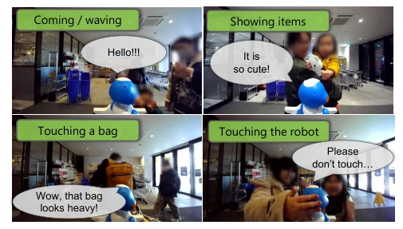
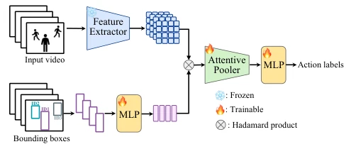

This paper attempts to break the "aphasia" of service robot dialogue systems, pointing out that the traditional STT-LLM-TTS pipeline ignores over 15% of non-verbal triggered interactions. The authors are quite down-to-earth, directly conducting a 6-day on-site deployment in a pharmacy, discovering that humans indeed wave, point at objects, and approach, not just speak. Methodologically, they developed a real-time multi-label recognizer to convert visual signals into tokens understandable by LLMs. Although the offline intent matching rate is only 49%, it is better than random guessing. However, relying on teleoperation data for training raises doubts about generalization in real-world scenarios, and task-based instruction generation remains a weak point, as it is too difficult to let AI guess what promotional information customers want to ask. Overall, it is a decent "patching" work, but still far from true autonomous intelligence, and online evaluation did not fully cover real noise, belonging to a typical pragmatic attempt of "data-driven but model-constrained".
Existing service robot dialogue systems mostly rely on STT-LLM-TTS cascaded architectures [7], assuming interactions are triggered solely by speech. However, HRI research indicates that non-verbal behaviors (such as gaze, gestures, approach) are crucial for interaction initiation [6]. In retail scenarios, customers often initiate interactions by waving, showing products, or approaching, and pure speech systems cannot capture these signals, leading to missed engagement opportunities. Although existing research has attempted to integrate non-verbal information [21][23], most are based on specific tasks or offline data, lacking system-level verification under real-time multi-person presence. This paper aims to quantify the non-verbal trigger ratio and build a real-time response framework, solving the awkward situation of "listening but not speaking", bridging the gap from teleoperation analysis to autonomous systems.

Fig. 1. In this study, we (a) collect dialogue data from a remote-controlled robot installed in a physical store, (b) analyze utterances resulting from the user’s nonverbal behavior, and (c) propose an autonomous dialogue system based on that analysis. We build a dialogue robot that can respond to the user’s nonverbal behavior in real time.
The overall process is divided into data collection, behavior recognition, and dialogue generation. First, dialogue data was collected via teleoperation robots in a pharmacy, labeling 21 behaviors and screening out 9 key non-verbal cues (such as Approached, Showed items). The recognition module uses ViT as a feature extractor (V-JEPA2), combined with MLP to extract positional features, aggregating multi-frame information through Cross-Attention, achieving 8 FPS real-time multi-label classification. Dialogue generation is based on an LLM (Gemini 2.5 Flash), encoding recognized behaviors into prompt tokens (e.g., [waved]) to conditionally generate responses. If Showed items are detected, a VLM is additionally called to identify specific items. This framework requires no hard-coded rules, utilizing the LLM's generalization ability to handle intent mapping, ensuring real-time response under multi-person presence. Binary cross-entropy loss is adopted and class weights are introduced to handle data imbalance.

Fig. 3. Proposed architecture for user nonverbal behavior recognition
The dataset comes from a Japanese pharmacy, 32 hours of operation, 1.7 hours of annotation. Evaluated 334 non-verbal trigger utterances. Baseline is majority class classification (44%). The main metric is Intent Agreement. Results show an overall match rate of 49.1%, where Social & Greeting reaches 69%, but Task-related is lower. Online prototype verified real-time performance. Ablation studies found behavior frequency affects recognition performance, high-frequency behaviors (Approached) have high F1, low-frequency (Touched belongings) have low F1. Task-based instruction generation is limited by environmental knowledge, and prompt engineering effects are limited. Additionally, the system performs poorly on User-user interaction recognition, with a recall rate of only 0.31, indicating complex social scenarios remain a difficulty.